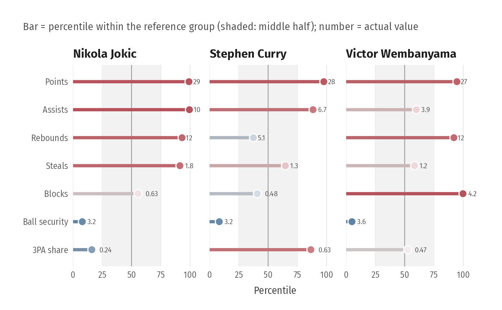

Each variable becomes its percentile within a reference group (league,
position, ...), so all axes share one meaningful 0-100 scale; this fixes the
problem of radial plots on a common min-max axis, which squash low-range
variables like steals. style = "bars" (default) draws a lollipop per
variable with the 50th percentile marked; style = "radar" keeps the
radial look for those who like it, but on percentiles and with straight
edges.
Usage
plot_profile(
data,
id,
vars,
subjects,
group = NULL,
reverse = NULL,
style = c("bars", "radar"),
ncol = NULL,
title = NULL,
subtitle = NULL,
caption = NULL
)Arguments
- data
Data containing the subjects and the reference group.
- id
Column identifying subjects.
- vars
Columns to profile. Name the vector to relabel (
c("Assists" = "ast36")).- subjects
Values of
idto show.- group
Optional column defining the reference group (percentiles are computed within it).
- reverse
Variables where lower is better (e.g. turnovers); their percentiles are flipped so outward always means "better".
- style
"bars"or"radar".- ncol
Facet columns.
- title, subtitle, caption
Labels.
Examples
p <- subset(player_seasons, league == "NBA" & minutes >= 1000)
p <- transform(p, pts36 = 36 * pts / minutes, ast36 = 36 * ast / minutes,
reb36 = 36 * (orb + drb) / minutes, stl36 = 36 * stl / minutes,
blk36 = 36 * blk / minutes, tov36 = 36 * tov / minutes,
three_rate = p3a / (p2a + p3a))
plot_profile(p, "player", c(Points = "pts36", Assists = "ast36", Rebounds = "reb36",
Steals = "stl36", Blocks = "blk36", `Ball security` = "tov36",
`3PA share` = "three_rate"),
subjects = c("Nikola Jokic", "Stephen Curry", "Victor Wembanyama"),
reverse = "tov36")
